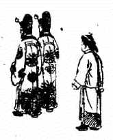
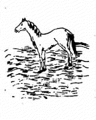
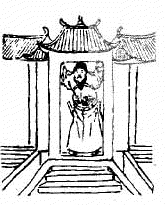
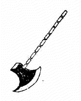
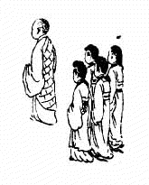
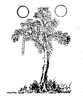
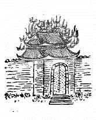
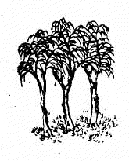

1. 21 甲申 ䷨ 兑下根上 损 1.1. 讖曰 1.2. 頌曰 1.3. 金聖歎 2. 22 乙酉 ䷥ 兑下离上 睽 2.1. 讖曰 2.2. 頌曰 2.3. 金聖歎 3. 23 丙戌 ䷉ 兑下乾上 履 3.1. 讖曰 3.2. 頌曰 3.3. 金聖歎 4. 24 丁亥 ䷼ 兑下巽上 中孚 4.1. 讖曰 4.2. 頌曰 4.3. 金聖歎 5. 25 戊子 ䷴ 根下巽上 渐 5.1. 讖曰 5.2. 頌曰 5.3. 金聖歎 6. 26 己丑 ䷲ 震下震上 雷 6.1. 讖曰 6.2. 頌曰 6.3. 金聖歎 7. 27 庚寅 ䷏ 震上坤下 豫 7.1. 讖曰 7.2. 頌曰 7.3. 金聖歎 8. 28 辛卯 ䷧ 坎下震上 解 8.1. 讖曰 8.2. 頌曰 8.3. 金聖歎 9. 29 壬辰 ䷟ 巽下震上 恒 9.1. 讖曰 9.2. 頌曰 9.3. 金聖歎 10. 30 癸巳 ䷭ 巽下坤上 升 10.1. 讖曰 10.2. 頌曰 10.3. 金聖歎 1. 21 甲申 ䷨ 兑下根上 损 1.1. 讖曰 空厥宫中 雪深三尺 吁嗟元𩠬 南辕北辙 1.2. 頌曰 妖氛未靖不康宁 北扫烽烟望帝京 异姓立朝终国位 卜世三六又南行 1.3. 金聖歎 「此象主金兵南下，徽宗禅位。 靖康元年十一月，京师陷，明年四月，金以二帝及宗室妃嫔北去，立张邦昌为帝。 卜世三六者，举其大数，宋自太祖至徽钦，凡一百七十二年。」  2. 22 乙酉 ䷥ 兑下离上 睽 2.1. 讖曰 天𢒗当空 否极见泰 𩡫𩡫淼淼 木冓大赖 2.2. 頌曰 神京王气满东南 祸水汪洋把策干 一木会支二八月 临行马色半平安 2.3. 金聖歎 「此象康王南渡。 建都临安，秦桧专权，遂成偏安之局。木冓，康王名构。 一木会支二八月者指秦桧也，木会为桧，春半秋半，郄成一秦字。」  3. 23 丙戌 ䷉ 兑下乾上 履 3.1. 讖曰 似道非道 乾沉坤𪒫 祥光宇内 一江断楫 3.2. 頌曰 胡儿大张挞伐威 两柱擎天力不支 如何兵火连天夜 犹自张灯作水嬉 3.3. 金聖歎 「此象主贾似道当权，汪立信文天祥辈不能以独力支持宋室。 襄樊围急，西子湖边似道犹张灯夜宴，宋室之亡其宜也。」  4. 24 丁亥 ䷼ 兑下巽上 中孚 4.1. 讖曰 山崖海边 不帝亦仙 二九四八 于万斯年 4.2. 頌曰 十一卜人小月终 回天无力道俱穷 干戈四起疑无路 指点洪涛巨浪中 4.3. 金聖歎 「此象主帝昺迁山，元令张弘范来攻，宋将张世杰兵溃，陆秀夫负帝赴海：宋室以亡。」 5. 25 戊子 ䷴ 根下巽上 渐 5.1. 讖曰 北帝南臣 一兀自立 斡难河水 燕巢捕䴰 5.2. 頌曰 鼎足争雄事本奇 一狼二鼠判须臾 北关锁钥虽牢固 子子孙孙五五宜 5.3. 金聖歎 「此象主元太祖称帝斡难河，太祖名铁木真，元代凡十主。 斧铁也，柄木也，斧柄十段即隐十主之意。」  6. 26 己丑 ䷲ 震下震上 雷 6.1. 讖曰 时无夜 年无米 花不花 贼四起 6.2. 頌曰 鼎沸中原木木来 四方警报起边垓 房中自有长生术 莫怪都城澈夜开 6.3. 金聖歎 「此象主顺帝惑西僧房中运气之术，溺于娱乐， 以致刘福通、徐寿辉、方国珍、明玉珍、张士诚，陈友谅等狼顾鸱张，乘机而起。 宦官朴不花壅不上闻，至徐达，常遇春直入京师，都城夜开，毫无警备。 有元一代竟丧于淫僧之手，不亦哀哉。刘福通立韩林儿为帝，故曰木木来。」  7. 27 庚寅 ䷏ 震上坤下 豫 7.1. 讖曰 惟日与月 下民之极 应运而兴 其色曰赤 7.2. 頌曰 枝枝叶叶现金光 晃晃朗朗照四方 江东岸上光明起 谈空说偈有真王 7.3. 金聖歎 「此象主明太祖登极。太祖曾为皇觉寺僧，洪武一代海内熙洽，治臻大平。」  8. 28 辛卯 ䷧ 坎下震上 解 8.1. 讖曰 草头火脚 宫阙灰飞 家中有鸟 郊外有尼 8.2. 頌曰 羽满高飞日 争研有李花 真龙游四海 方外是吾家 8.3. 金聖歎 「此象主燕王起兵，李景隆迎燕兵入都，宫中大火，建文祝髮出亡。」  9. 29 壬辰 ䷟ 巽下震上 恒 9.1. 讖曰 枝发厥荣 为国之栋 皞皞熙熙 康乐利众 9.2. 頌曰 一枝向北一枝东 又有南枝种亦同 宇内同歌贤母德 真有三代之遗风 9.3. 金聖歎 「此象主宣宗时张太后用杨士奇、杨溥、杨荣三人，能使天下又安， 希风三代，此一治也。时人称士奇为西杨，溥为南杨，荣为东杨。」  10. 30 癸巳 ䷭ 巽下坤上 升 10.1. 讖曰 半圭半林 合则生变 石亦有灵 生荣死贱 10.2. 頌曰 缺一不成也占先 六龙亲御到胡边 天心复见人心顺 相克相生马不前 10.3. 金聖歎 「此象主张太后崩权归王振，致有也先之患。 其后上皇复辟，石亨自诩首功，卒以咨横伏诛，此一乱也。」